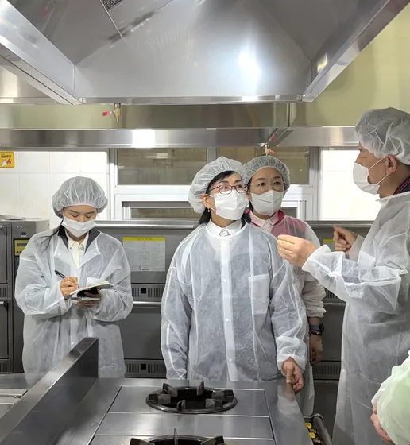
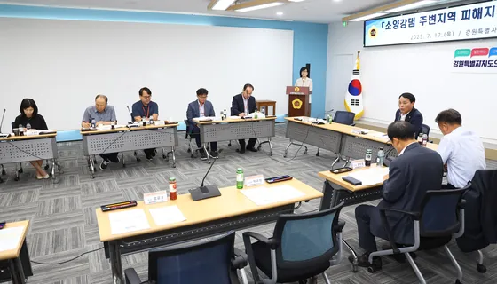
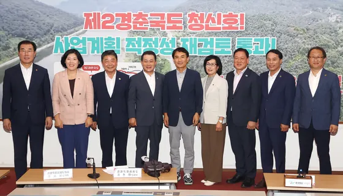
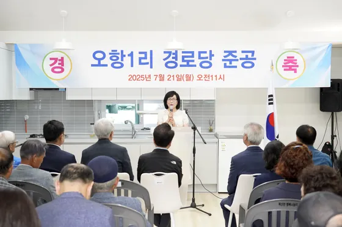
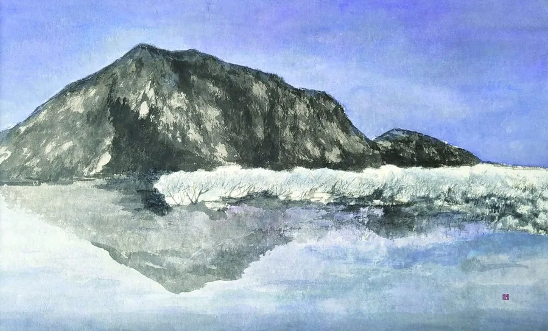
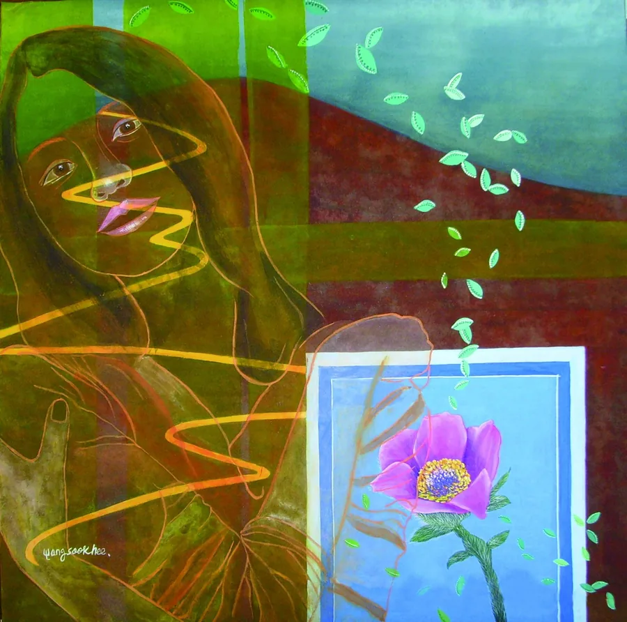
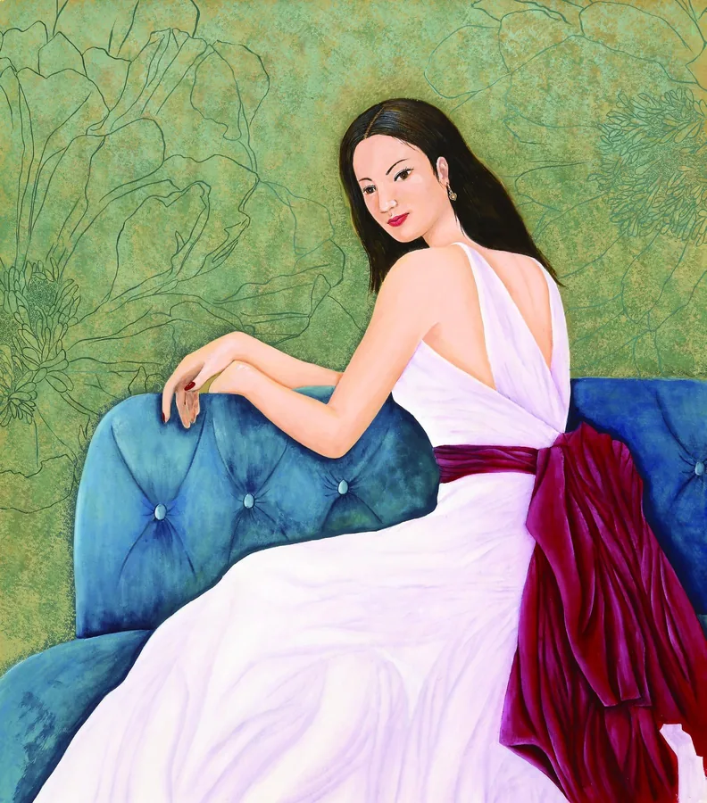
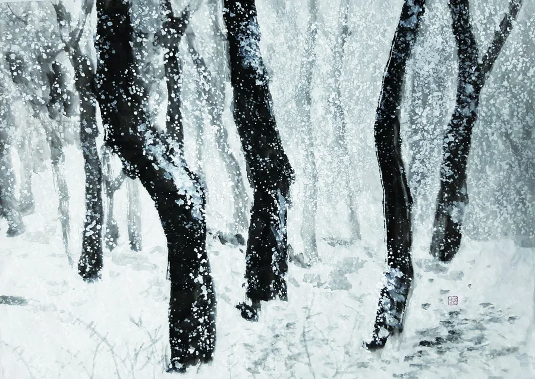

약력
학력 · 주요 경력
- 강원특별자치도의원 (전)안전건설위원회 부위원장 · 운영위원회 위원
- 소양강댐 피해지역 공동대책위 간사
- 현대한국화협회 부이사장 · 한국전업미술가협회 이사
- 한림대학교 커뮤니티대학 지도강사 (전)
- 국민의힘 강원특별자치도당 여성위원회 위원장 (전)
- 대한민국 미술대전(국전) 한국화 심사위원 (전)
- 홍익대학교 미술대학원 동양화전공 석사 졸업
수상 · 표창
- NBN 2026 혁신인물대상의정정책 부문
- 대한민국문화연예대상지방의정 부문 · 제33회
- 강원산림환경대상입법 부문 · 제3회
- 2024 혁신리더대상의정발전 및 지역사회공헌 부문
- 우수의정대상예술문화 부문
출처: 학력·경력 도의회 공식 프로필, 수상 본인 제공 약력
주요 사안

학교 급식실 환기시설
2026년 도정질문. 강원지역 급식실 환기시설 개선공사 가운데 72.2%가 부적정 판정을 받은 사유와 전수조사 계획, 재공사 예산 규모 질의

소양강댐
댐 주변지역 피해지원 연구회 간담회 개최, 지원사업비 상향 논의

제2경춘국도
사업계획 적정성 재검토 통과 기자회견 참석

마을 경로당
북산면 오항1리, 춘천 장학2리 경로당 준공식 참석
언론 보도
한국산업안전보건공단 점검 결과를 근거로 환기설비 개선사업 총체적 부실을 도정질문으로 지적하여 행정 감시 역할 수행.
기사 보기2025도정질문재난관리기금 미충족 3년 연속 법령 위반 지적강원도 재난관리기금 충족률 38%(2024)→36%(2025)로 3년 연속 법령 위반. 재난 예방사업 사전 집행 불가, 초기 대응 지연 위험 경고.
기사 보기2025예결위강원도립미술관 건립 강력 촉구전국 17개 광역 중 유일하게 도립미술관 없는 강원도 현실 지적. 권진규·박수근 등 강원 출신 작가 작품 보존 시급성 강조.
기사 보기2025조례발의대안교육기관 지원 조례 대표 발의 추진전국 최초 수준으로 강원도 대안교육기관 지원 조례 준비. 교육 다양성 확보 및 학부모·학생 선택권 보장.
기사 보기20255분발언강원재난안전연구센터 설립 촉구기후위험지수 강원도 2.59 (전국 평균 1.73) 데이터를 근거로, 전국 17개 시도 중 11곳이 이미 운영 중인 재난안전연구센터의 강원도 설립을 촉구.
기사 보기2025간담회강원 대안학교 교장단 간담회 개최강원지역 10여 개 대안교육기관 교장단과 간담회를 열어 현장 목소리를 수렴. 공교육 학생 1인당 2,600만원 vs 대안학교 연 700만원 차별 문제 지적.
기사 보기2025보도자료경상지역 산불 대응, 강원도 선제적 재난대책본부 가동 촉구안전건설위 부위원장으로서 광역자치단체 최초 재난안전대책본부 가동을 이끌어내며, 텐트·매트 지원 및 성금 2억원 모금 성과.
기사 보기2025방송인터뷰G1TV '우리지역 대표' 시리즈 선정강원민방 G1TV의 '우리지역 대표' 기획 시리즈로 선정. "정치인이기보다 좋은 이웃으로 기억되길" 소신 피력.
기사 보기2025현장활동소양호 동자개 종자 5만 마리 방류행사생태 복원과 지속가능한 어업을 위해 강원도 5개 시군 8개 서식지에 총 40만 마리 방류. 2~3년 후 약 3억원 어업인 소득증대 기대.
기사 보기2025예술활동현대한국화협회 44주년 대작전 출품예술의전당 한가람미술관 전시 참가. 홍익대 미술대학원 석사 출신, 현대한국화협회 부이사장으로서 예술과 의정의 조화.
기사 보기2024지역봉사어르신 치매예방 프로그램 · 마을환경 개선 봉사소양강댐노인복지관에서 14주간 치매 조기진단 프로그램 운영. 춘천사랑봉사단과 3개월간 마을입구 단장 봉사.
기사 보기사진 기록
한국화가 양숙희

116.8×91cm · 순지, 혼합채색, 먹 · 2021

53×45.5cm · 장지, 혼합채색 · 2019

100×80.3cm · 장지, 혼합채색 · 2020

100×80.3cm · 순지, 먹, 호분 · 2021
대한민국미술대전(국전) 한국화 심사위원 역임
(사)현대한국화협회 부이사장 · (사)종로미술협회 부회장
갤러리 휘 대표
연락처
- 주소
- 강원특별자치도 춘천시
우두상리4길 20, 202호